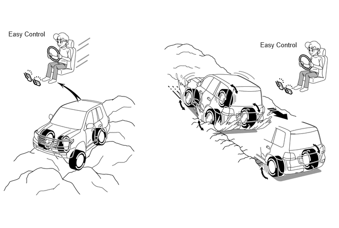

- Shift position is not in P or N
- Transfer is in 4L position
- Parking brake is released
- Driver door is closed
- ATF temperature is not abnormal
- Brake actuator temperature is not abnormal
- VSC system is not malfunctioning
| Last Modified: 10-07-2025 | 6.11:8.1.0 | Doc ID: NM100000002GOQE |
| Model Year Start: 2024 | Model: Tacoma | Prod Date Range: [12/2023 - ] |
| Title: BRAKE CONTROL / DYNAMIC CONTROL SYSTEMS: BRAKE CONTROL SYSTEM (for Gasoline Model): CRAWL; 2024 - 2026 MY Tacoma [12/2023 - ] | ||
CRAWL
SYSTEM CONTROL
(a) CRAWL is a drive assist system that controls the engine output and brake fluid pressure automatically when driving off-road or on slippery roads to maintain a set low vehicle speed without the driver needing to operate the accelerator or brake.
Control Overview
(b) 5 levels are provided for the target vehicle speeds of CRAWL, and the recommended speeds are as follows.
|
Recommended Speeds |
Road Conditions |
|---|---|
|
Lo |
Rock, Mogul (Downhill), Loose rock (Downhill) |
|
Lo - Mid |
Rock, Mogul (Downhill), Loose rock (Downhill), Mogul (Uphill) |
|
Mid |
Mogul (Uphill) |
|
Mid - Hi |
Mogul (Uphill), Snow, Mud, Loose rock (Uphill), Sand, Gravel/Dirt, Grass |
|
Hi |
Snow, Mud, Loose rock (Uphill), Sand, Gravel/Dirt, Mogul (Uphill), Grass |
HINT:
The recommended speeds are for reference. They may not be optimal depending on the road conditions (pitch, road surface friction and undulations).
(1) CRAWL Effects
- The driver can concentrate on steering operations when driving on road surfaces that require advanced acceleration and brake operations, such as off-road driving on very rough surfaces.
- Since control is performed to maximize the suppression of wheel spin and wheel lock, superior vehicle stability is ensured when driving on slippery roads, steep gradients and similar surfaces.
(2) CRAWL Control Description
- The target vehicle speed is determined in the
range of approximately 1 km/h to 6 km/h from each
wheel speed sensor, acceleration sensor, driver's
intention to brake estimated from sensors(*), stop
light switch and mode selection switch.
* The types of sensor vary according to each brake system.
- When the vehicle body speed is higher than the target vehicle speed, the engine output is reduced. When the wheel speed is higher than the target wheel speed, control is performed by raising the brake fluid pressure of the corresponding wheel.
- When the vehicle body speed is lower than the target vehicle speed, the engine output is increased. When the wheel speed is lower than the target wheel speed, control is performed by reducing the brake fluid pressure of the corresponding wheel.
(3) CRAWL Operation Conditions
- When the CRAWL ON/OFF switch is turned on while all of the following conditions have been met, the CRAWL indicator light illuminates, the slip indicator light blinks and CRAWL starts.
CRAWL Operation Conditions
|
|
(4) CRAWL Temporary Stop Conditions
- When the vehicle speed exceeds approximately 25 km/h* while CRAWL is operating, CRAWL stops temporarily and the CRAWL indicator light blinks. In this case, CRAWL restarts when the vehicle speed drops below approximately 25 km/h*.
- *: When the rear differential is locked (models with rear differential lock), the vehicle speed will be approximately 10 km/h.
(5) CRAWL Ending Conditions (Brake/Engine Control)
- When any of the following conditions is met, the buzzer sounds, the CRAWL indicator light blinks and CRAWL ends. When control ends due to a DAC/CRAWL switch operation, the buzzer does not sound and the CRAWL indicator light turns off.
CRAWL Ending Conditions (Brake/Engine Control)
|
HINT:
When turning CRAWL off with the DAC/CRAWL switch, perform the operation while the indicator of the DAC/CRAWL switch is illuminated.